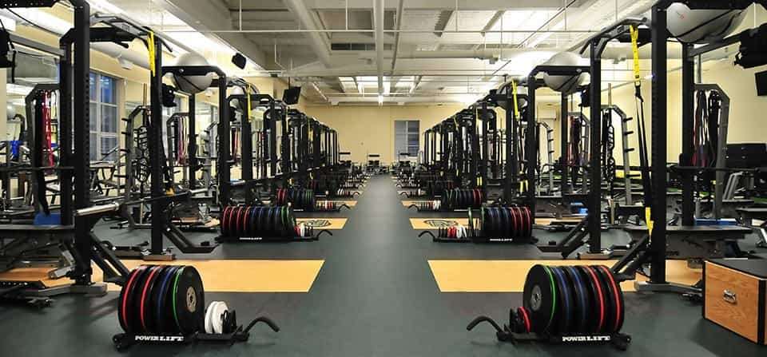

David is a strength coach and bestselling Men's Health author. You can follow him at HowToBeast.com.


There are literally countless articles out there on how to burn fat and build muscle.
There are thousands of different approaches… And hundreds of them are viable.
Everyone has their own preferences for nutrition advice, exercise selection, supplementation, and training frequency, to name a few.
But in this article, I want to go back to the basics. I want to discuss the basic three principles that everyone MUST follow in order to improve their bodies.The three principles that every good routine and every solid piece of advice builds upon.

Are there certain foods that are more nutritious than others? Sure.
Does the amount of protein vs. carbs vs fat you consume affect your body? Sure.
Does it matter when you eat your meals? Yes, somewhat.
But ALL of these factors are a distant second to controlling your caloric intake. Without controlling your caloric intake you simply WON’T make optimal progress. Let me explain.
If you want to burn fat, you need to consume fewer calories than your body needs to maintain its current stature. You need to give your body a reason to burn existing tissue, and the only way to do this is to provide it with less energy than it needs.
If you want to build muscle, you similarly need to provide your body with MORE energy than it needs to maintain. If your body doesn’t have enough energy to maintain its current stature then it’s going to be awfully hard for it to synthesize new muscle tissue. You need to be eating enough calories to gain weight.
Finally, I want to address what will happen if you simply eat around maintenance level, and make no drastic changes to your weight. The bad news is that your progress will be slow. The good news is that the natural – albeit small – caloric surpluses and deficits that you’ll experience on a day-to-day basis will yield equally small reductions in bodyfat and additions in lean muscle mass and transform your body over time… That is, assuming you follow principle number two.
Progressive overload is simply a fancy way of saying that you need to always be increasing the intensity of your strength-training workouts.
You can lift more weight, do more reps, perform more explosive reps, or do something similar to increase the intensity… But you must do SOMETHING.
It doesn’t matter if you use a full-body routine or a traditional split routine (although I prefer the full-body approach).
The reasoning behind this is that your body won’t change unless you give it a reason to. If you continue to lift the same weight for the same reps, week in and week out, your body has no reason to synthesize new muscle tissue, regardless of if you’re gaining, maintaining, or losing weight.
By increasing the intensity of your workout you provide your body with the stimulus it needs to:

The final law of getting bigger and leaner is maintaining consistency over the long term. This means:
If you consistently do these two things over the course of days, weeks, months, and years I guarantee that you will look better and better. You simply WILL get bigger, leaner, and stronger.
Having a perfect diet and being 100% strict in the gym for a few days, a few weeks, or a few months DOESN’T DO SHIT. Our bodies take time to build muscle and burn fat. You must grow to love – or at least habitually do – the things I covered in the first two principles above or you’re doomed to fail and maintain your average physique.
Improving your body and getting bigger and leaner is not complicated. But it does require time and discipline. There’s no way around that.
Man up, eat right, and lift heavy—day in and day out—and enjoy the steady stream of improvements that come your way.
Read More: 4 Fitness Myths That Are Pure Bullshit